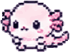
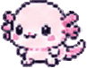
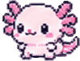
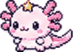
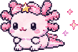
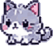
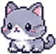
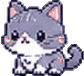
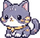
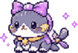

LV.1
부화직후
채원님이 준 카와이 스프라이트를 고해상도 픽셀아트로 변환했어요.
원본 디자인(아가미·꼬리·리본·볼터치)을 그대로 살리면서 작은 픽셀 디테일로.










76px 해상도22색 팔레트원본 디자인 유지
이 변환은 12종 기본 + 모든 교배종/희귀종에 그대로 돌릴 수 있어요.
더 작은 픽셀(고해상도)·색 수·외곽선 등은 한 번에 조절 가능해요.